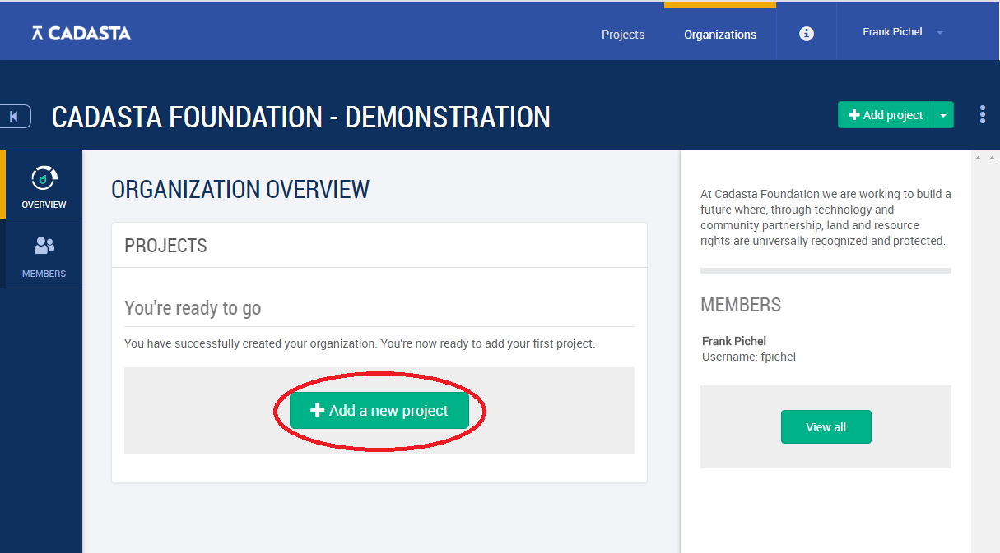
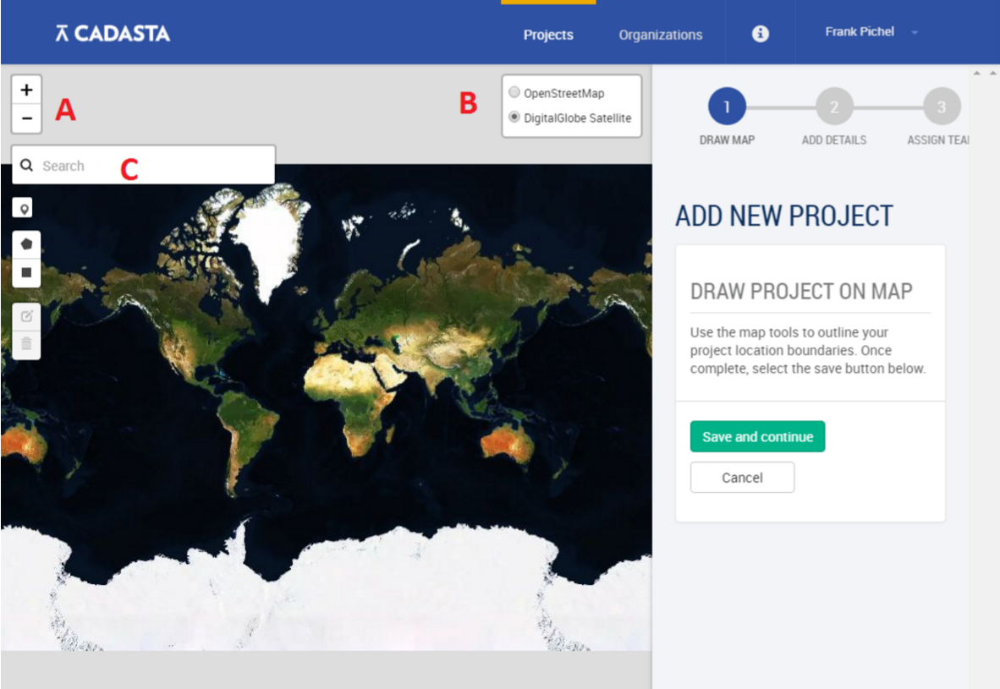
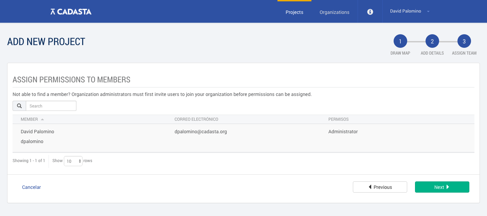

Establishing a Project
Once you have established an organization it is now time to set up your project(s). As noted in the introduction, an organization might have multiple projects for data collection. These could be different in geographical area, scope, community of interest, etc.
To add a project, either proceed directly from adding your organization, or navigate to your newly established organization by clicking Organizations at the top of the page and locating your organization.
From Organization Overview page, select Add a new project.

The first step will be to define a project location, in other words, where the field data collection activities will take place.
To find the project location, it is possible use a couple of approaches, as depicted in the image below, you might:
Zoom directly to the project location using the OpenStreetMap layer (see label A in the image below for zoom tools).
Turn on the satellite imagery to help identify the project location (see label B).
Search a geographic place name (see label C) 
After selecting the project area, either through creating a polygon or drawing a rectangle, please select Save and Continue.
Note: the project area does not need to be precisely defined, just make sure you have covered all areas you may be working, leaving a comfortable buffer on the margins.
You will now be asked to fill out General Information regarding the project, including:
Project name
Whether the project will be Public or Private
The Project description
The Project URL
The questionnaire (see the custom data selection section for details); and
Project contacts
Now that the General Information of the project is defined, you will be asked to Assign Permissions to Members. These permissions will define user accesses and privileges for using the platform. Currently, there are five user roles, defined below with details regarding access rights:
- Administrator. The Administrator can create new projects within an organization, manages user roles and access, and has full permissions regarding accessing and editing data.
- Project Manager. The Project Manager works within an organization on a specific project, and with regard to that project can access and edit all data within the project, including adding new users to the project and setting access rights.
- Data Collector. The Data Collector works in the field with the communities to collect data using Field Papers, Mobile Applications, or by directly entering data into the platform. The Data Collector can add data in a project, but cannot edit existing data.
- Project User. The Project User can view all data within the project, even if it is set to private. The Project User does not have the ability to add or edit data.
- Public User. A Public User can view only data that is publicly available.

Congratulations, you've created a project!